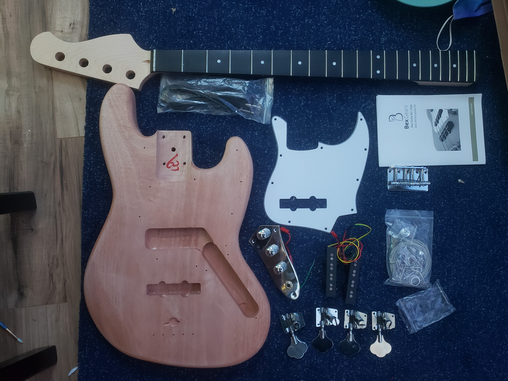

Jrew's Projects
Project 1) Building an Electric Bass
After being a guitarist for 3 years, I'd decided that I wanted to try my hands at building a guitar.
I also wanted to pick up bass as my second instrument, so I figured that it would be a great idea to combine those two ideas together and build my own bass!
I bought a bass kit on amazon which included the body, neck, and all neccesary hardware for me to make a bass.

Project 2) Analog Modular synth
I wanted a modular synth, and I wanted an electronics project to keep my skills sharp.
So I started looking into different schematics to build and found this wonderful youtube series by Moritz Klein.
I've taken his schematics and lightly adjusted them to add some extra goodies.